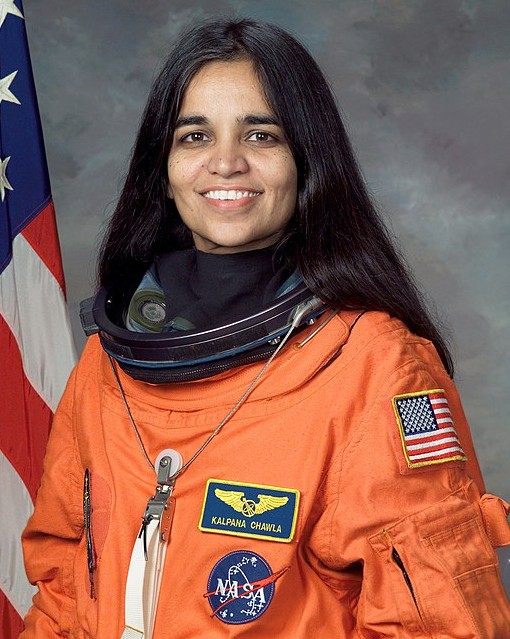

Kalpana Chawla

Born in India and later becoming a naturalized American citizen, Kalpana Chawla pursued her passion for flight from an early age. She moved to the United States to continue her studies, earning a master's degree and a Ph.D. in aerospace engineering.
Her academic research focused on computational fluid dynamics, a field critical to understanding airflow, lift, and stability in aircraft and spacecraft design.
Key Contributions
- First woman of Indian origin in space
- First woman to pilot a space shuttle
- Involved in the Space Shuttle Columbia mission
- Contributed to the development of advanced airfoil designs
- Conducted research in computational fluid dynamics and aerodynamics
- Served as a mission specialist on STS-87 and STS-107
- Contributed to space research related to microgravity experiments
Timeline
Why She Matters
Kalpana Chawla's pioneering career in space exploration continues to inspire women and people of all backgrounds to pursue STEM fields, proving that determination and courage can break barriers, even in the most challenging environments.
Legacy and Impact
Kalpana Chawla became a global symbol of perseverance, curiosity, and courage. Her journey from a small town in India to space highlighted the power of education and determination, inspiring countless students—especially girls—to dream beyond social and geographical boundaries.
Numerous institutions, scholarships, and educational programs around the world have been named in her honor, ensuring that her legacy continues to encourage future generations in science, engineering, and space exploration.
References
- NASA — Kalpana Chawla Biography: nasa.gov/content/kalpana-chawla
- Wikipedia — Kalpana Chawla: wikipedia.org/Kalpana_Chawla
- NASA — STS-107 Columbia Mission: nasa.gov/mission/sts-107
- NASA Biography Archive: history.nasa.gov